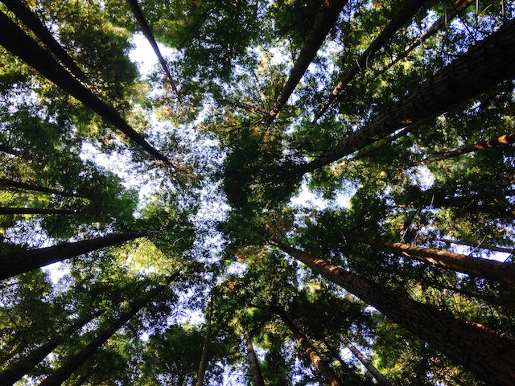
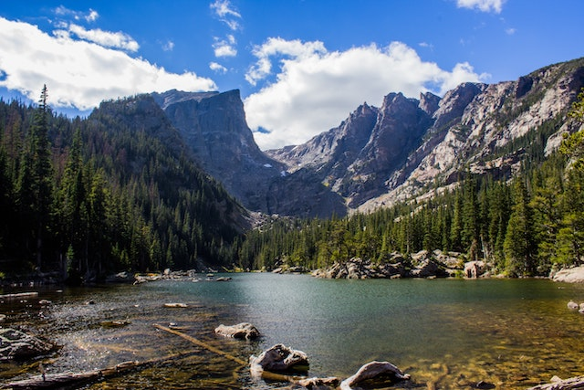

Asian involvement in environmental justice resources
- Pollution news in BostonHarbor, Chinatown, river, lake, ocean
- Environmental justice related items
- Asian involvement in environmental justice resources
- Contact Me
- Donate
- Home
|  | |
|
Why the Environmental Movement Should Stop Ignoring Asian Americans |
From pollution to policing, this Asian-American group is expanding environmental justice in the Bay Area |
|
A Korean American examines her ancestral past—steeped in colonialism as well as conservation—to explore her values as an environmentalist. |
Sandy Saeteurn grew up in Richmond, California, where Chevron’s massive 3,000-acre oil refinery reigns supreme. She’s no stranger to the refinery’s chemical flares, and she spent many of her childhood days home sick. She’s not the only one who has learned to link the refinery and the presence of illness in her community: A 2008 study (co-authored by Grist board member Rachel Morello-Frosch) found that almost half of all homes in the area had indoor levels of refinery-related particulate matter pollution that exceeded the state’s air quality standards. |
 |
|
|
4 Incredible Asian American Women Who Are Fighting for Environmental Justice |
Climate Justice Is Racial Justice |
|
There are so many incredible Asian American environmental justice activists fighting for a more equitable and sustainable planet. |
Boston’s Chinatown is the third largest in the United states, and like many Boston neighborhoods build on top of a landfill. Due to developing railways the area became less desirable to earlier immigrants of mostly Jewish, Irish, and Italian descent. |
|
Asian Americans Advancing Justice | Chicago builds power through collective advocacy and organizing to achieve racial equity. |
We all deserve a healthy and clean environment where our communities can thrive. |
|
Developing grassroots leaders through base-building programs such as KINETIC (for high school English learners), I Speak Power (for adult English learners), and A Just Chi (at-large community members)Connecting communities through coalition leadership including Just Democracy Illinois, the Illinois Coalition for Immigrant and Refugee Rights, and the Pan-Asian Voter Empowerment Coalition |
Write a letter to the California Air Resources Board: |
|  | |
|
What Do We Mean by Environmental Justice? |
|
|
Thanks to CLF’s relentless advocacy – in courtrooms, in statehouses, and in boardrooms from New England to D.C. – today Boston Harbor is the pride of the city, Georges Bank is free from oil and gas rigs, Lake Champlain’s polluted waters are getting cleaner, and New England’s remaining obsolete coal plants are on the verge of shutting down for good. |
|